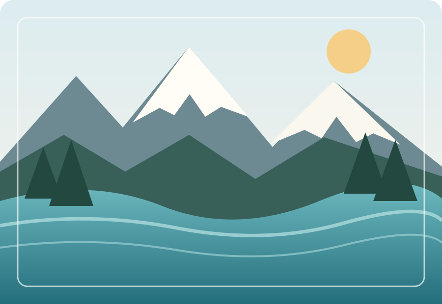

Оттава
Столица страны, известная музеями, парками и зданиями парламента.
Северная Америка · Путеводитель
Горные озёра, бескрайние леса, современные города и культурное разнообразие — откройте для себя Канаду.
Исследовать Канаду ↓
01 / Природа
Канада — государство в Северной Америке и вторая по площади страна мира. Её территория включает обширные леса, горы, равнины и тысячи озёр. Канадские Скалистые горы привлекают путешественников живописными пейзажами.
02 / Города
Столица страны, известная музеями, парками и зданиями парламента.
Крупнейший город Канады с разнообразной культурой и башней CN Tower.
Город на тихоокеанском побережье рядом с океаном и горами.
Одна из самых известных природных достопримечательностей — Ниагарские водопады на границе Канады и США.
03 / Культура
Канада отличается культурным разнообразием и богатым историческим наследием. На федеральном уровне официальными языками являются английский и французский. Кленовый лист — один из главных символов страны, изображённый на её флаге.
04 / Коротко о главном
| Характеристика | Информация |
|---|---|
| Столица | Оттава |
| Часть света | Северная Америка |
| Официальные языки | Английский и французский |
| Символ на флаге | Кленовый лист |
Канада известна сочетанием впечатляющей природы, современных городов и культурного разнообразия.
Источник: Канада — Википедия.